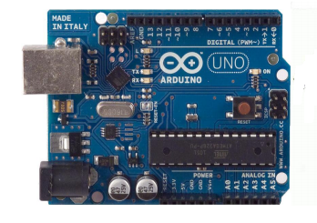

Arduino es una herramienta para hacer que los ordenadores puedan sentir y controlar el mundo físico a través de tu ordenador personal. Es una plataforma de desarrollo de computación física (physical computing) de código abierto, basada en una placa con un sencillo microcontrolador y un entorno de desarrollo para
crear software (programas) para la placa.
Podes usar Arduino para crear objetos interactivos, leyendo datos de una gran variedad de interruptores y sensores y controlar multitud de tipos de luces, motores y otros actuadores físicos. Los proyectos con Arduino pueden ser autónomos o comunicarse con un programa (software) que se ejecute en tu ordenador. La placa puedes montarla tú mismo o comprarla ya lista para usar, y el software de desarrollo es abierto y lo puedes descargar gratis desde la página www.arduino.cc/en/ .
El Arduino puede ser alimentado a través de la conexión USB o con una fuente de alimentación externa. La fuente de alimentación se selecciona automáticamente.